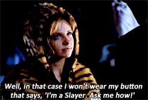
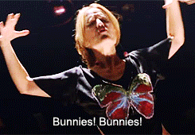
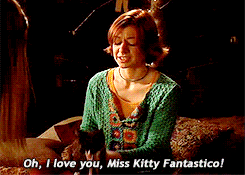
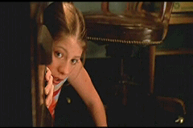
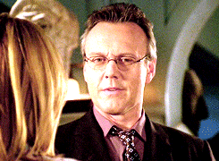
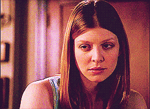
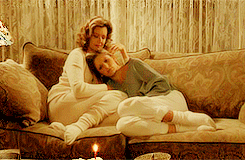
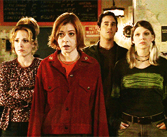
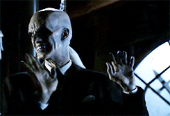
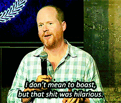

So you're watching Buffy The Vampire Slayer and you're a little confused sometimes right? Well number one, fantastic choice watching the show, it will change your life. No lie. And second, it can be a super confusing show (thank you Joss!) and you can get totally lost sometimes. Especially around season five (some crazy plot twists go down from there on out). So here's a neat little list of questions you might have whilst watching BTVS!
Good let's get the basics in order. So Buffy is obviously a Vampire Slayer. She comes from a long line of vampire slayers before her (all female because girls are just better). This isn't something genetic or anything like that, her mother is (well, was) the furthest thing from a vampire slayer. Vampire slayers are chosen and when a slayer dies they are called upon. Slayers are typically young (teenagers) so the older you get the chances of you being called upon as the slayer pretty much decrease. And slayers typically die before they're 25 so it's a pretty tough gig. We learn all about "potential slayers" in season seven. These are people who are, well, potential slayers, but they have not been called. So they don't have the awesome strength as Buffy, but they have the potential and can be trained.
Solid question. It's never really been explained but often brought up. Xander tells her to dress up as something scary in the season four Halloween episode and she dresses as a bunny because "bunnies frighten her". And then in the musical episode in season six she sings that bunnies are the reason for all the singing and chaos. So she just doesn't like bunnies. That's cool. But things get confusing in a flashback when Anya (then Aud) has several bunnies that she seems pretty affectionate towards them. So what gives Joss Whedon!? There are a ton of theories (some are kind of crazy) but I'm going to chock it up to her associating bunnies to the time in her life when she was married to Olaf and he cheated on her. And then she became a Vengenace Demon.
You know, Willow and Tara's adorable little cat. Who ran around and was adorable? Well, Dawn (of course) accidentally killed her whilst playing with a crossbow. You never see this (thank God, I don't need any more ammunition to hate her) but she mentioned it in season seven to Xander.
Because monks are stupid. What, who said that? So rude... Dawn is "the Key" (an unfortunate plot line for season five). The Key use to be a ball of energy that existed and needed to be protected from those who would use it from evil (aka Glory, the Big Bad from season five who wanted to go home using the key and in the process all realities would blend and just chaos would ensue). So the monks did some sort of magic and turned this energy into a person who had memories and other people knew who she was. Overall, Dawn in the worst and after season five no longer the Key.
I know right? Giles is the best and without him the show is a little lack luster. Well Anthony Stewart Head, as a Brit, wanted to spend more time with his family in England so Joss wrote him in as more of a minor character for the last two seasons. 
Because he's awful. Just a personal opinion, but seriously Tara was the only pure character on the show, Joss, why kill her? Well Joss is all about the story. He wanted Willow to go really dark with her magic so what would prompt this darkness? Take away the thing she loves the most. So goodbye Tara Maclay, we will always remember you! 
Originally Buffy believes Glory killed her mother since she threatened her family and friends if she didn't give her the Key. But Joyce had a brain tumor, which was removed, but then suffered a brain aneurysm and died in season six. Absolutely the saddest episode ("The Body"). So if you haven't cried in a while and feel that you should, watch that episode. 
Well, they are a group of teenagers who are fighting monsters and vampires and the like. So what else would you call them? The group changes from season to season but they always refer to themselves as the Scoobies. It's adorable really. Also, Sarah Michelle Gellar and Seth Green were also in some of the live action Scooby Doo movies. 
Well there are so many good ones it's really hard to choose. But many sites and fans have said that season four episode ten ("Hush") is the best episode. As much as I don't really care for season four as a whole, that episode is definitely the best. It has the best monsters and most of the episode is in complete silence. So it's a really interesting one to watch for sure. 
I know, you feel like your life is over right? Well don't worry there are plenty of things to watch that are like Buffy. Definitely check out all of Joss's other works. Angel is the spinoff of Buffy so if you liked Buffy you'll probably like Angel too. Firefly is another one by Joss and is SO GOOD. But it only has one season which is the worst because it was an awesome show. Also, Dollhouse is good as well. Eliza Dushku (Faith) is in this one along with Amy Acker (Fred from Angel). If you like the actors that Joss uses, be sure to see his other work because he uses them again and again. 